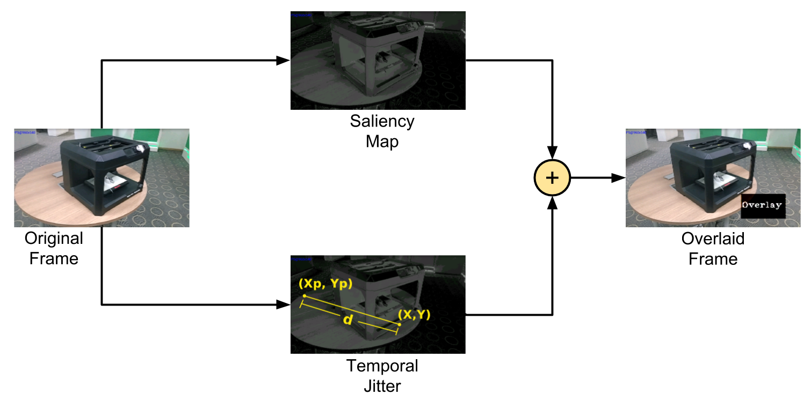
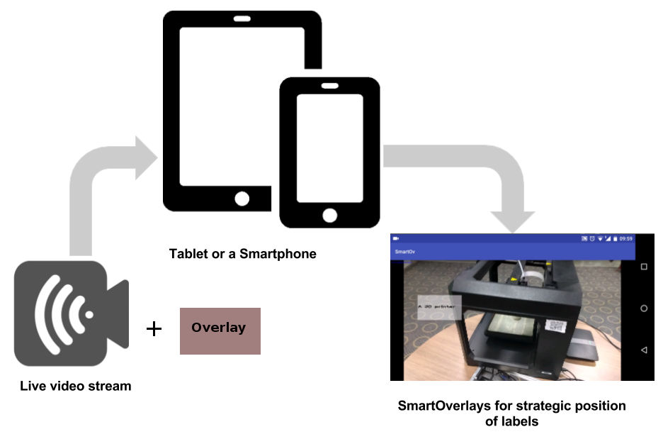

Abstract
Textual overlays/labels add contextual information in Augmented Reality (AR) applications. The spatial placement of labels is a challenging task due to constraints that (i) labels should not occlude the object/scene of interest, and, (ii) are optimally placed for better interpretation of scene. To this end, we present a novel method for optimal placement of labels for AR. We formulate this method by an objective function that minimizes both occlusion with visually salient regions in scenes of interest, and the temporal jitter for facilitating coherence in real-time AR applications. The main focus of proposed algorithm is real-time label placement on low-end android phones/tablets. The sophisticated state-of-the-art algorithms for optimal positioning of textual label work only on the images and often inefficient for real-time performance on those devices. We demonstrate the efficiency of our method by porting the algorithm on a smart-phone/tablet. Further, we capture objective and subjective metrics to determine the efficacy of the method; objective metrics include computation time taken for determining the label location and Label Occlusion over Saliency (LOS) score over salient regions in the scene. Subjective metrics include position, temporal coherence in the overlay, color and responsiveness.
Key Contribution
- We present a label placement algorithm that works in real-time, on low-end android devices such as a smartphone and a tablet.
- Label placement is formulated as an objective function parameterised by image saliency and temporal jitter.
- We introduce a new evaluation metric, Saliency Occlusion score, for measuring the effectiveness of overlay placement.
The Idea

RGB video stream in real-time is the input for our algorithm. We compute the saliency map of the incoming video frames using method proposed by Achanta et al. It then iterates through the pixel values provided in the search space and sums up the saliency values given by the map in a hypothetical box of size \(O_h , O_w\). The pixel value with the lowest sum is picked as the ideal candidate suggesting lowest salience. The overlay is shifted if the Euclidean distance, \(d\), between the previous position and the current position scaled by \(λ\), jitter parameter, is as low as possible. To combine the constraints posed by both low saliency and temporal jitter we formulate an optimization problem, as follows: $$\begin{equation} \begin{aligned} & \underset{(X,Y)}{\text{minimize}} & S((X,Y)) + \lambda d((X,Y); (X_p, Y_p)) \\ & \text{subject to} & X \leq F_w - O_w, \quad X \geq 0\\ & & Y \leq F_h - O_h, \quad Y \geq 0 \end{aligned} \end{equation}$$
Application

We have a developed an application to test our hypothesis. At a high level, the live feed captured from a tablet (or a handheld mobile device) is sent to our algorithm that runs on device for overlaying contextual labels for a scene, which aids in better interpretation of the scene.
The application is available on request.